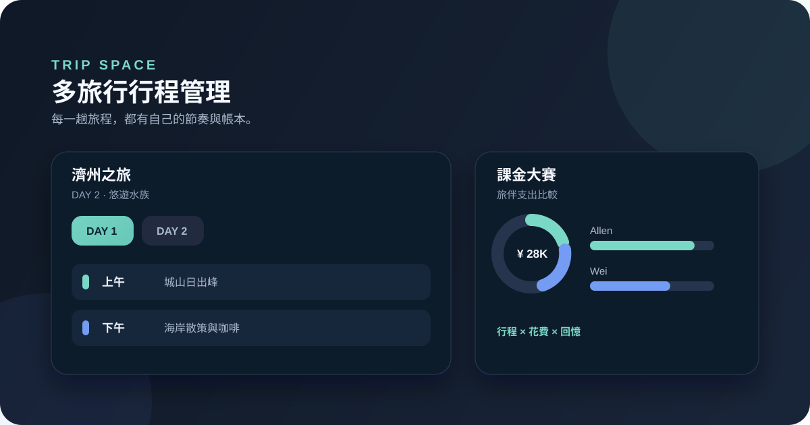

作品 · 生活工具
Trip Space 多旅行行程管理
2026.08 · 個人專案

FIG. 35 — 產品主畫面
關於這個作品
Trip Space 是以旅行為資料邊界的行程管理工具。使用者可建立不同旅行，分別設定天數、同行成員、幣別與換算匯率，再在旅途中安排上午、下午、晚上的行程與費用。每趟旅行的行程、收藏和私帳皆獨立保存於 Firestore。
作品亮點
建立多趟旅行，獨立管理日期、天數、成員與匯率
依日與時段編排行程，支援收藏匯入、地圖連結與拖曳排序
以甜甜圈圖呈現共同費用分類，以橫條圖比較旅伴支出
使用 Firebase Firestore 保存每趟旅行的行程與私帳資料